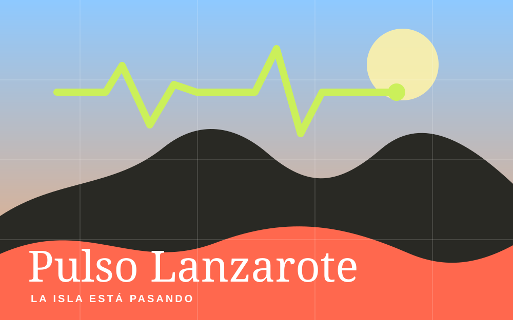

Nueve agendas locales
Scrapers específicos recopilan eventos del Cabildo, ayuntamientos, espacios culturales y portales de ocio. Cada fuente produce el mismo modelo de evento para que el resto del sistema pueda procesarlo.

Datos · Producto local
Creé Pulso Lanzarote para reunir los eventos locales que estaban repartidos entre agendas institucionales y culturales. El objetivo es dar visibilidad a planes canarios y facilitar que cualquier persona encuentre qué hacer en la isla.
Ver repositorio ↗Scrapers específicos recopilan eventos del Cabildo, ayuntamientos, espacios culturales y portales de ocio. Cada fuente produce el mismo modelo de evento para que el resto del sistema pueda procesarlo.
El sistema normaliza y cruza publicaciones para conservar un único evento. Gemma 3 clasifica el contenido y bge-m3 genera embeddings para búsqueda y ranking. Las reglas de fecha y diversidad completan la selección.
La misma agenda alimenta la web pública, un bot de Telegram, un calendario iCalendar y el panel de operaciones. Pulso está en desarrollo activo y utiliza modelos locales, sin APIs de pago.